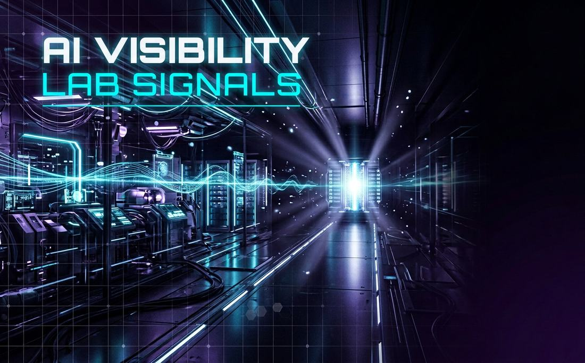

Вас не называют
Клиент спрашивает о салоне, клинике или сервисе — а AI приводит конкурентов.
AI VISIBILITY LAB
Проверим, как локальные клиенты и потенциальные покупатели видят ваш бизнес в ответах AI-систем. Бесплатный мини-аудит: 3 ключевых запроса × 2 AI-системы на выбор (ChatGPT, Алиса AI, Perplexity, Gemini, DeepSeek, Яндекс Нейро — или ваш вариант).
Без доступа к рекламным кабинетам. Результат — понятная карта стартовой точки.
Клиент спрашивает о салоне, клинике или сервисе — а AI приводит конкурентов.
Старые цены, неверная география, неактуальные услуги или путаница с другой компанией.
AI чаще использует их сайты, каталоги, обзоры, отзывы и профильные медиа.
Страницы и посты есть, но они не отвечают на важные вопросы клиента системно.
Яндекс.Метрика видит клики — но не видит AI. Мы покажем то, чего не видно в Яндекс.Метрике: как нейросети отвечают на запросы ваших клиентов.
GEO-SCANNER / ТАРИФЫ
От быстрой диагностики до полного исследования AI-видимости бренда. Если сомневаетесь — начните с бесплатного мини-аудита.
Для локального бизнеса и экспертов, которым нужно увидеть стартовую точку AI-видимости.
5–7 рабочих дней
Для бизнеса, который хочет понять, почему AI выбирает конкурентов и что делать дальше.
7–10 рабочих дней
Для тех, кому нужен не только отчёт, но и первые внедрения с повторным замером.
4–6 недель
Нужны только стратегия или контент? После GEO-сканера можно перейти к GEO-маршруту и GEO-лаборатории контента.
Заявка оформляется через форму на странице контактов.
HELM HANDOVER · УНИКАЛЬНОЕ ПРЕДЛОЖЕНИЕ
GEO-штурвал — все услуги лаборатории в одном цикле, с полной передачей методики. Не отчёт, который пылится в папке, и не подписка, которая держит за руку: рабочий инструмент, который остаётся у вас.
Аудит + Стратегия + Контент + Промпт-библиотека + Обучение = Ваша GEO-лаборатория
55 000–80 000 ₽ · 3–5 недель · заказывали тест-драйв? Засчитаем его стоимость в штурвал.
Три ключевых запроса в двух AI-системах на выбор (ChatGPT, Алиса AI, Perplexity, Gemini, DeepSeek, Яндекс Нейро — или ваш вариант): бренд, конкуренты, точность сведений и типы источников.
Нет. Ответы AI изменчивы. Мы измеряем видимость, находим пробелы и усиливаем информационную основу бренда.
Ссылка на сайт или соцсети, сфера, регион и контакт для результата.
Нет. GEO дополняет SEO, репутационный маркетинг и контент-маркетинг.
DAILY SIGNAL / ПРОГНОЗ
Каждый день лаборатория выдаёт один рабочий сигнал из наших протоколов — как метеостанция, только для AI-видимости бренда. Прогноз меняется сам, заходите завтра.
Посчитайте Share of Voice — долю своих упоминаний среди всех брендов в ответах. Так видно, какие темы вы отдаёте конкурентам.
Протокол: Какие GEO-метрики можно использовать в отчёте

FRESH SIGNALS / БЛОГ
Разбираем GEO, локальный поиск, цифровой след бренда и контент, который помогает людям и AI точнее понять бизнес.
От пустого домена до активных рекомендаций нейросети — две недели. Скрины 26.09–07.10, вехи по дням, три замера, честные оговорки и формула окупаемости под ваш чек и конверсию.
AI-ВИДИМОСТЬПочему нейросеть достраивает пустоту о бренде: эффект цифрового эха, три маски галлюцинаций и протокол канонизации фактов — 4 шага и чек-лист.
AI-ВИДИМОСТЬТри слоя происхождения AI-списка, формула «рейтинг ИИ = рейтинг его площадок» и таблица источников из замера. Как проверить любой топ за один вечер.
GEO ДЛЯ БИЗНЕСАПубличный замер AI-видимости: 79 запросов, 16 категорий, 430 упоминаний и 326 брендов. Формула рейтинга, лидеры по отраслям и источники ответов.
Перейти в GEO-лабораториюОставьте ссылку на бренд — проведём первичную проверку и покажем, с чего начать.
Получить бесплатный мини-аудит